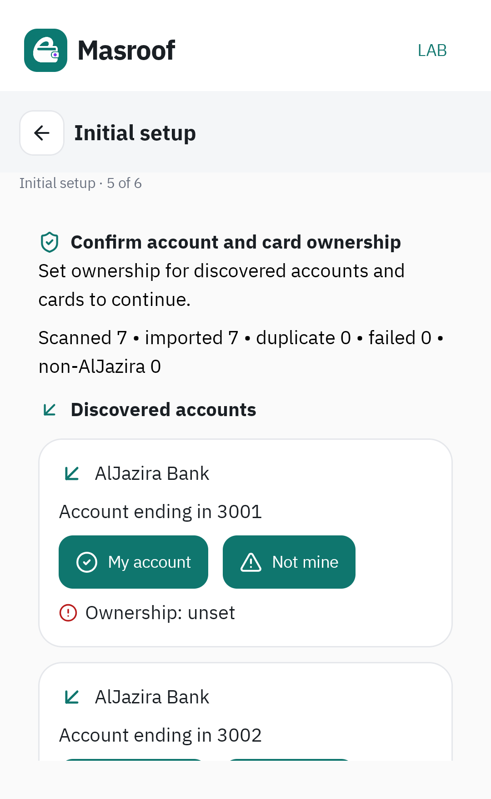
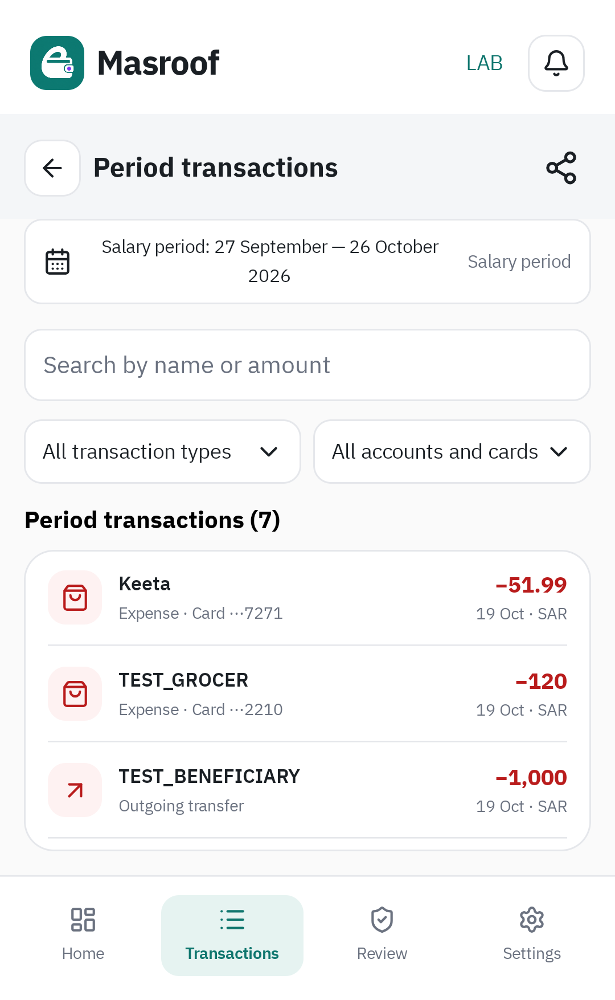
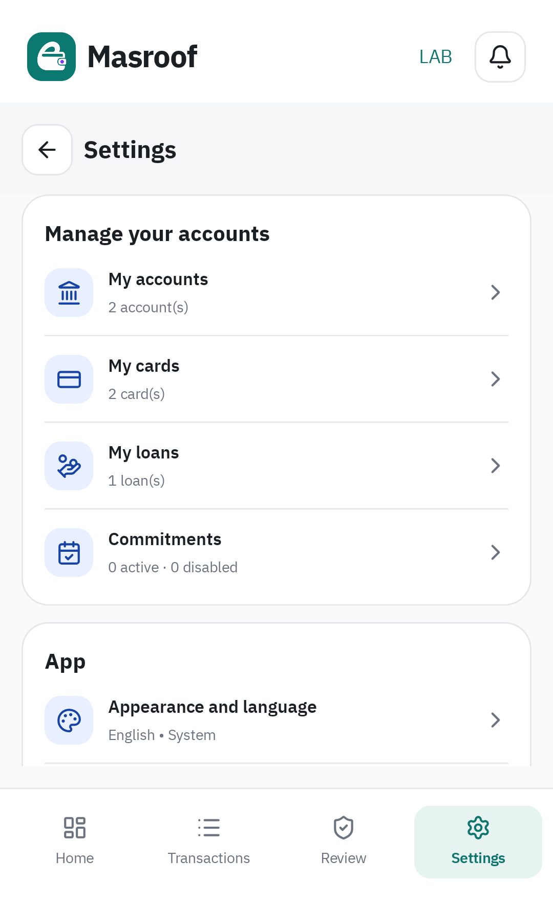
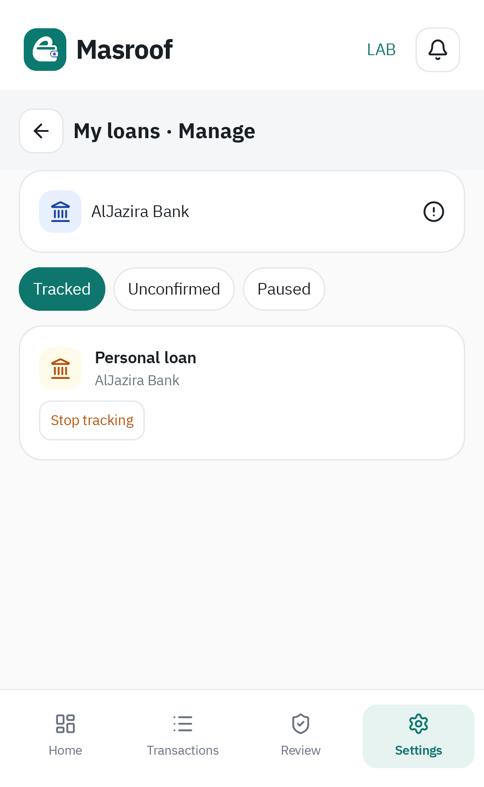

الحالة: مراحل النسخ والربط وML مكتملة. التنظيف والتحقق النهائي متبقيان؛ الإصدار النهائي غير جاهز بعد.
| المرحلة | الحالة | الدليل |
|---|---|---|
| نسخة الفعلي وفصل البيانات | مكتملة | توليد محكوم ببصمات المصدر. قاعدة مستقلة بنفس الجداول الأربعة عشر، الإصدار ١٨، ونفس بصمة المخطط. |
| ربط BankEngine | مكتملة | ٥٥ حالة تفسير، ٦٣ اختبارًا للمختبر، ٥٨ للمحرك، و٥ رحلات على Android 16. |
| تشغيل ML | مكتملة | نموذج محلي مدرّب، تعلّم من تصحيح بشري، إعادة معالجة المعلّق، واستمرار التعلّم بعد إعادة الفتح. |
| التنظيف والقبول الشامل | متبقية | التنفيذ القديم محفوظ مؤقتًا وغير داخل مصادر البناء الجديدة. |
النموذج family-nb-v1-244ca8bba9635681 مدرّب على ٢٢ مجموعة صيغ، مع ٦ للتحقق و٦ للاختبار. مجموع ٥٠ عينة مصدرية يختزل إلى ٣٤ صيغة؛ الفصل على مستوى الصيغة لمنع تسرّب المتشابهات. التقييم صغير وأظهر أخطاء، لذلك الاستدلال الإحصائي المفعّل للحوالات الواردة فقط. القواعد المعروفة تعمل أولًا دائمًا. الصيغة التي يؤكدها المستخدم تُحفظ وتستفيد منها الرسائل اللاحقة؛ تعارض التصحيحات يبقى للمراجعة.
٣ اختبارات جهاز أثبتت ترحيل حوالة بصيغة جديدة دون اعتماد يدوي، وتعلّم قسط تمويل من قرار المراجعة الأصلي ثم معالجة رسالة معلّقة وأخرى بعد إعادة الفتح بمبلغ ورصيد جديدين، واستمرار القواعد عند تلف ذاكرة النموذج. ML لا يستخرج المبلغ ولا يقرر الملكية. الخيارات المبهمة مثل «مصروف» لا تُحوّل إلى عائلة رسالة بالتخمين.
قاعدة المال هي جداول الفعلي الأربعة عشر دون تغيير. قاعدة مساعدة منفصلة بجدولين للتفسير وأمثلة التصحيح، مع ملف نموذج محلي. تقييم التدريب كاملًا · نتائج ML · الجهاز · دليل التعلّم وإعادة الفتح
مجموعتان: ٧ رسائل أنتجت ٧ حركات، وصيغ الصور الخمس أنتجت ٥ حركات. تطابقت الحركات والحسابات والبطاقات والقروض والالتزامات والتحليل اليومي والتجار مع مسار الفعلي. بقيت النتائج بعد إعادة الفتح، وإعادة الاستيراد لم تضاعف الحركات.
القرض يُعتمد بالطريقة الأصلية عندما يذكر قسط التمويل نوعًا واضحًا ويُخصم من حساب مملوك. لم نضف إجراء اعتماد جديدًا لكل قسط.
المقارنة كشفت فروقًا قابلة للإصلاح في تعارض العائلات، إشارات الخصم، رسوم الحوالات والمبلغ الأجنبي. أُصلحت في المحرك. بقيت تحسينات موثقة ومحددة: حفظ أرصدة صريحة كان المحلل القديم يهملها، وتحديد بنك مستفيد من اسم صريح. الدرجة العشرية 1 و1.0 متساويتان عدديًا، ولا تُعامل كفرق مالي. التحسينات في رصد المستحق على رسالة شراء لا تجعلها كشف حساب؛ حسابات الفعلي الأصلية ما زالت تأخذ المستحق من رسالة الكشف المعتمدة فقط.
٥٥ هي حالات اختبار، وبعض الرسائل المرجعية متداخلة مع العينات المنظمة. هذا لا يثبت فهم كل صيغة مستقبلية أو تفعيل ML؛ معيار ML التالي مستقل.
كل ملفات app وui-kit الأصلية دون تعديل. الدخول من إعدادات المطورين في الحزمة نفسها. لا ترحيل ولا حذف تلقائي لبيانات المختبر السابق.
نتائج التحقق · سجل الجهاز · نتائج الصور الخمس · نتائج المجموعة الأخرى · الفروق المفسرة · كل ملفات المصدر وبصماتها



